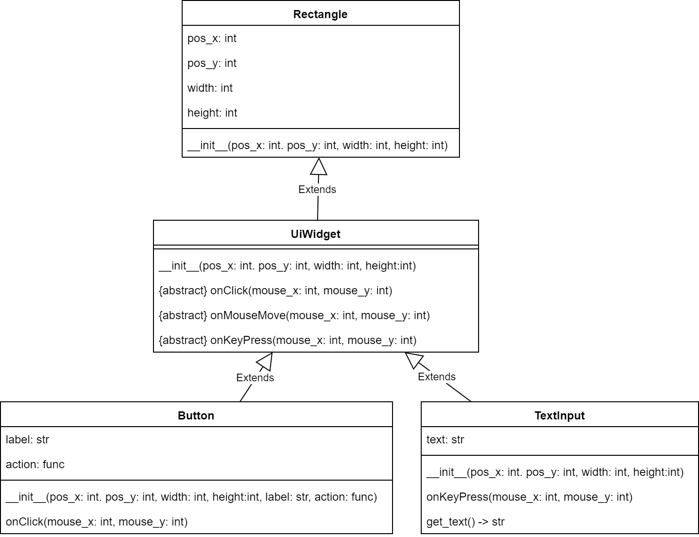

Lukas exam
1 Sortings
1.1 Bubble sort
- can only swap two adjacent values in the array
- goes from front to back and swaps the current two values if out of order (by itself \(O(n)\))
- has to do this n times, hence a runtime of \(O(n^2)\)
1.2 Insertion sort
- have a sorted sub-array
- Take next element of the not-sorted sub-array and search for the place in the sorted sub array, in which it has to fit in (by itself \(O(n)\))
- then shift elements of the array to the right to make space for the new element. (by itself also \(O(n)\) but since they are done after each other, in total until now we are still \(O(2n) == O(n)\))
- insert the element into the new free space
- Do this n times, hence a runtime of \(O(n^2)\)
1.3 Selection sort
- have a sorted sub-array
- go through the unsorted sub-array and select the next minimum (or maximum if sorting desc) (by itself \(O(n)\))
- put it as the next element of the sorted sub-array (by swapping it with the first element of the non-soted sub array)
- do this n times, hence a runtime of \(O(n^2)\)
1.4 Merge sort
- recursive algorithm
- if array is just len 0 or len 1, it is already sorted
- if it is longer, divide them in half, and recusively mergesort both halfes
- now merge the two sorted arrays to one and we are done (merging is \(O(n)\))
- total runtime is \(O(n\cdot log(n))\) because the tree hight with n children is \(log(n)\) and we are creating a tree of the array by splitting it always in half)
1.5 Quicksort
- Somehow find a pivot element
- reorder the elements in the array such that all elements lower or equal to the pivot are on the left of all elements that are bigger
- recusively call quicksort on both sides
- Worst case runtime is \(O(n^2)\), because if we keep being unlucky with the pivot elements we are effectively doing Selection sort
2 C
2.1 General
- Explain
#include - Explain
#define - Explain forward declarations
- Explain header files
- Explain
struct - Explain
typedef - Explain
sizeof - Explain
recursion, using the terms:- callstack
- stack frame
- what is a pointer and show code how you use one to change the value of a variable
- what is an array
- what is a string
2.2 Some Functions
2.2.1 Sqrt
A way to iteratively estimate square roots is babylonian method of finding square roots.
- Start with an initial guess \(x_0\) (1 works, too) of the square root of a number \(S\).
- Every next estimate \(x_{n+1}\) depends on the last one \[x_{n+1} = \frac{1}{2}(x_n+\frac{S}{x_n})\]
- Repeat step 2 until the desired precision is reached.
Write a program sqrt.c that reads a float from the user and calculates its
square root to the precision of 6 digits after the decimal point. A run will
look like this:
./sqrt Enter any number: 2 The square root of 2.000000 is 1.414214
2.3 Queue and Stack
struct Stack { Stack* next_block; FILE* data; }
Implement the operations:
void push(Stack* stack, FILE* data)FILE* pop(Stack* stack)
typedef struct Queue { Queue_Node* first; Queue_Node* last; } Queue; typedef struct Queue_Node { Queue_Node* next_in_queue; float data; } Queue_Node;
Implement the operations:
Queue* create_empty_queue()void enqueue(Queue* queue, float data)FILE* dequeue(Queue* queue)
2.3.1 Question
Why does it make sense, to have only one structure for the stack and two for the queue?
2.4 What is wrong with this code
bool array_find(int array[], int array_length, int to_search) { for (int i = array_length; i >= 0; --i) { if (array[i] == to_search) return true; return false; } }
2.5 What will happen?
#include <stdio.h> int main() { int i = 10; while (i --> 0) printf("%s\n", (i % 2 == 0) ? "even" : "odd"); return 0; }
3 Python
3.1 General
- Explain the different usages for the built-in container types:
- list
- tuple
- dictionary
- set
- Explain the
forloop - Explain
range - Explain
zip - Explain
enumerate
3.2 Some Functions
3.2.1 range
Write the range function yourself
3.2.2 zip
Write the zip function yourself
3.2.3 enumerate
Write the enumerate function yourself, using zip and range
3.2.4 count words
Write a function count_words that takes in a sentence (string) and returns a
dictionary mapping the distinct words to the amount of times they appear in the
sentence.
Also explain what runtime your code has.
3.2.5 remove doubles
Write the function remove_doubles that takes a list as input and returns a
list, that contains only distinct elements.
Actually write two versions of it:
- One as short as possible
- One that is guaranteed to preserve the order of the original elements
3.3 OOP
3.3.1 General questions
Explain in two sentences each:
- what is a class
- what is an object
- what is inheritance
- why is inheritance useful
- what is an abstract method
3.3.2 UML
Implement the following UML diagram using python classes. Write the funcitons in a way that makes sense for the given context. (Yep, Klausurvorbereitung)

4 Runtime
4.1 What are the Runtimes
- Inserting something at the start of a list
- Inserting something at the middle of a list
- Inserting something at the end of a list (trick question)
- Inserting a new element into a full array
- Acessing something in an array
- Overwriting something in an array
4.2 Linked list of integers 1
bool ll_find(Node* node, int to_search) { for (Node* head = node; head != NULL; head = head->next) if (head->data == to_search) return true; return false; }
4.3 Linked list of integers 2
bool ll_find(Node* node, int to_search) { if (node == NULL) return false; if (node->data == to_search) return true; return ll_find(node->next, to_search); }
4.4 Linked list of strings
bool ll_find(Node* node, char* to_search) { if (node == NULL) return false; if (strcmp(node->data, to_search) == 0) return true; return ll_find(node->next, to_search); }
4.5 array 1
int sum = 0; int array[array_length]; // array is being filled for (int i = 0, i < array_length; ++i) { sum += array[i]; }
4.6 array 2
int sum = 0; char array[4][array_length]; // array is being filled for (int i = 0, i < array_length; ++i) { for (int j = 0; j < 4; ++j) { fprintf(file, "%c", array[j][i]); } }
4.7 Extra
What is the runtime of DFS?
5 Data structures
5.1 General
5.1.1 write as much as you know: what is same, what is different?
- compare python lists and and c arrays,
- compare python lists and and c linked lists
- compare python tuples and and c arrays
- compare python dictionaries and and c hash tables
5.2 Lists
typedef struct List { int data; List* rest; // pointer to the rest of the list }
5.2.1 write the functions:
int size(List* l)print_front_to_back(List* l)print_back_to_front(List* l)int sum_of_all_elements(List* l)
5.2.2 complete the function:
int average_of_all_elements(List* l)
int average_of_all_elements_inner(List* l, int sum, int count) { if (l == NULL) { ______; } return average_of_all_elements_inner(l->next, ______, ______); } int average_of_all_elements(List* l) { return average_of_all_elements_inner(l, ______, ______); }
6 Bonus
6.1 1
- What does this code do?
- What runtimme has it?
- Write code that does the same but has a better runtime?
l = generate_some_list() d = {} for e in l: d[e] = l.count(e)